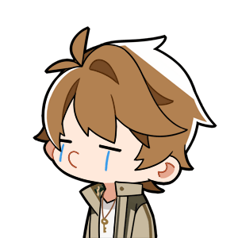

Welcome to Febrian Section
Hope you like it~
MY MESSAGE FOR YOU!
warning! ini panjang so tetep baca yes:"
WEI ANJIR BS MERAH
sooo ai mo bilang makasii udah slalu bantuin tugas coding saia and sabar buanget menjelaskan ke saia yang lemot banget inii T=T pokoknya lu keren banget sihhh kekkk bisa bisanya masi sabar T=T and maap banget kalo ai sering nanyaa atau bahkan nyusahin karna saia lemot:" and makasi bangetsss pas ultah dah bikinin web! jujurly saia mau bikin ini diem diem tapii PLIS IG LU GA AD FOTO LU NYAA T=T ai dah cari di tag juga ga ada... adanya yg twibon hadeuh

oya btw makasi sangad sudah menghibur saia wkwkwk apalagi dengan mendukung kehaluan saia maap kalo ga nyaman atau gimana jujurly saia kepikiran takut berlebihan but kalo dah kelewatan atau ga nyaman bilang aja lohh! jangan sungkan yess!
ah mau bilang sorry jugaa kalo ai ada salah, pasti ada sih tapi maapkeun yes:" and smoga tak terulangi terus meneruss T=T
ohhh ama mo bilang sorry juga ama yg waktu itu pas kalian ke rumah buat ambil postcard yongki itu so sorry banget ai lsg naik itu kek ga sopan soalnya ai masi setengah sadarr and saia lupa dengan piyama saia yang gambar dino T=T ai kepikiran astaganaga jd say sorrynya disini aja dengg (biar keren)
OH AND BTW YG WEB DARI LU ITU mgkn pas itu ai belom sempet kasi respond fullnya soalnya ai salpok sangad dengan potonya wkwkwkkwkwk
SORI YES AI GA JAGO INGGRIS JD SURAT BUAT YU NYA INDO NTAR YG ADA SALAH NANGKEP ARTINYA NIH
so untuk yang paragrap pertama, PLIS WEH KOK JADI SEDIHHH KAN TTP BISA KONTAKAN KALO DAH KULIAHH T=T tenanggg saia tak akan melupakan dirimu yang keruen ini~! SO AWAS KAU LUPAKAN AI!
duh paragrap pertamanya aja dah sedih syd... oke paragrap kedua, AGAIN AND AGAIN WHY YOU SOO AAAAAA ai ucapin thank you so much muchh untuk semuaaa yang sudah dilalui bersamaaa (eaaa bijakkk) kek jujurly ai tuh mikir kita ga bs deket gitu lowh secara kek dr SMP juga ga terlalu sering ngobrol tohh and deket juga yang pas lu ama fane ya?ama yg les? oke maap kalo salah :") BUT I'M SO SO HEPI KITA BS DEKETT ~! ga nyangka saia ternyata diri anda seperti ini... '-' AI KIRA LU KAN KEK COOL COOL GITU KAN (anjai) TERNYATA... :) hai sobat seperhaluan ku '3' pokoknya ai so hepi bisa deket with youuu!
and untuk yang quotes... plis...itu dari mana quotesnyaaaaa!!!(ini yang ai unsend waktu itu wkwkwkwk)
JUJURLY SANGAD NIH! AWAS KETAWAA! PAS BACA REAKSI AI TUH MAU KEK...dahlah tak bisa dideskripsikan :) BUT KEK MAU SALTING MAU BAPER TAPI GABOLEE :"
POKOKNYA SAIA TERHURA DENGAN QUOTESNYAAA!!! kek yaampun terharu sekali diri saia ini T=T and you must know
"I don’t have words to describe what I feel for you. Meeting you is the best thing that ever happened in my life." INI JUGA DARI AI BUAT YUU!!! walau ntar dah lulus and kuliah masing masing ai tak akan lupaa pokoknya! like baik bgt sih anjir luu and seru bgt woe ai pun terheran why masi jomblo diri lu ck ck ck kabarin loh ya kalo dah ad cewek!hehehe
POKOKNYA(again) ai bs deket ama yu tuh ga bisa di deskripsikan juga and the best thingg ever~! ntar kalo ketemuan kita poto yes! biar kenang kenangan gituch(anjaii)